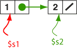

# link the first node to the second sw $s2,4($s1) # copy address of second node # into the first node # put null in the link of the second node sw $0,4($s2)
After the statements execute, the structure is complete. Dynamic memory has been used to implement the linked structure.
In the picture the contents of $s2
and the contents of the link field of the first node
contain the same address.
The picture shows this as two different arrows.
But both arrows are colored green to mean that they represent the same address.
The previous chapter did this in the source code by describing memory in the data section. Symbolic addresses were used to make the links:
.data
elmnt01: .word 1
.word elmnt02
elmnt02: .word 2
.word 0
Now the same structure is built dynamically. The addresses are in registers and you need to use statements to put them where you want. But the resulting structure is the same (except that it is done with different sections of memory).
Could you copy the address of the first node to a location in the data section of memory?